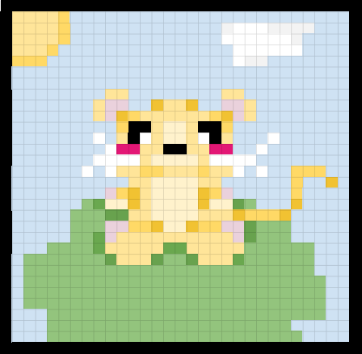

I created my favicon by going on an excel document and making a 32 by 32 box that had little white pixels in it, with a black border around it. Inside of this box, I colored some of the pixels, making a blue sky, a sun, a cloud, a hill, and a ginger rat that sits in the middle of the hill. After I finished creating this, I saved it as a pdf, then took a screenshot of the pdf to add onto this document. I created the html document and then in the head, I typed in the favicon tag by looking at the tutorial and copying the tag for it. I added the link for the favicon and that was how I got my favicon.
A bigger version of my favicon